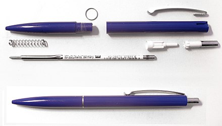
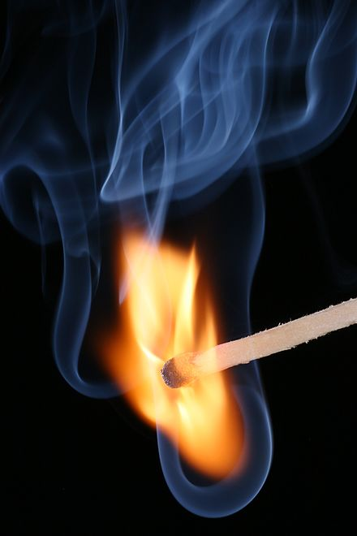
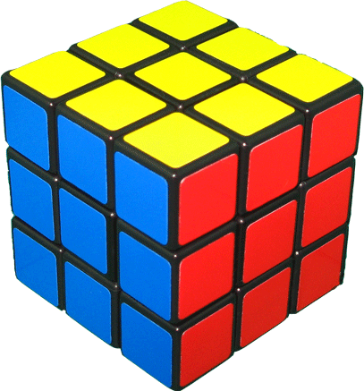

Erfinder und Entdecker
László József Bíró (1899–1985), Ungarn und Argentinien – Kugelschreiber, 1938 Arg=el birome

Ottó Titusz Bláthy (1860–1939), Ungarn – Transformator (mit Miksa Déri und Károly Zipernowsky), Wattmeter, Wechselstrom und Turbogenerator
Dennis Gabor (1900–1979), Ungarn/Großbritannien – Holographie, 1948 1971 Nobelpreis für Physik
Carl Goldmark (1906–1977), Ungarn – Langspielplatte aus Vinyl 1948, CBS-Farbfernsehen
János Irinyi (1817–1895), Ungarn – geräuschloses, explosionsschwaches Streichholz 1836, Sicherheitszünder 
Ányos Jedlik (1800–1895), Ungarn – Gleichstrommotor 1829, Dynamoelektrisches Prinzip (Dynamomaschine) 1861
Wolfgang von Kempelen (1734–1804), Österreich/Ungarn – Schachmaschine 1769, Sprechmaschine 1791
John von Neumann (1903–1957), Ungarn/USA – Von-Neumann-Architektur (Computer)
Tivadar Puskás (1844–1893), Ungarn – Telefonzentrale (Vermittlungsstelle) 1878, Gründer der Telefonzeitung Telefon Hírmondó 1893
Ernő Rubik (* 1944), Ungarn – Rubik’s Cube 1974, Rubik’s Snake, Rubiks Uhr 1988 
Albert von Szent-Györgyi(1893–1986), Ungarn - Nobelpreis 1918 „für seine Entdeckungen auf dem Gebiet der biologischen Verbrennungsprozesse, besonders in Beziehung auf das Vitamin C und die Katalyse der Fumarsäure“
Edward Teller (1908–2003), Österreich/Ungarn/USA – Wasserstoffbombe 1952